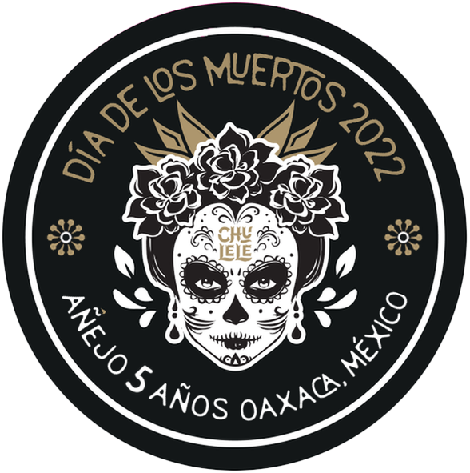
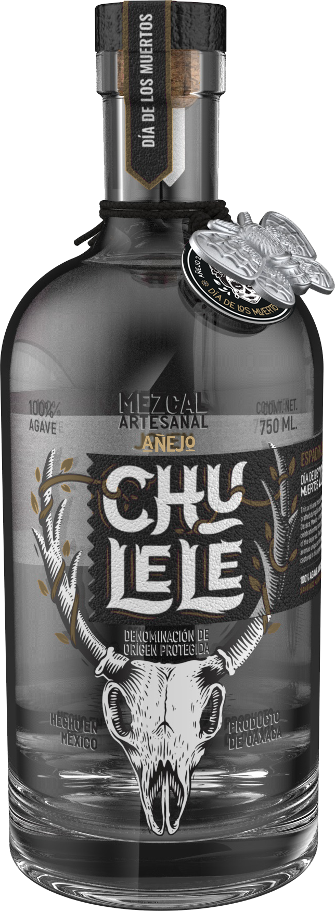

The same harvest that became our Día de los Muertos joven — set apart, sealed in oak, and left to time. A five-year añejo, still resting in Oaxaca.
In November 2022, after the joven was bottled, a portion of the Día de los Muertos batch was drawn off and laid into oak. It has not left the barrel since.
Where the joven captures the moment of its making, the añejo captures the years after — the slow trade between spirit and wood, in the cool air of a Oaxacan cellar. Espadín softens. Smoke folds into vanilla, oak, and dried fruit.
We do not release it on a schedule. The barrel decides. Until then, it is held in reserve — the one Chulele you cannot yet taste, only wait for.
The añejo will release once — in a single window, by invitation. Leave your name and you will be among the first to know when the barrel is ready.
Request an invitation →